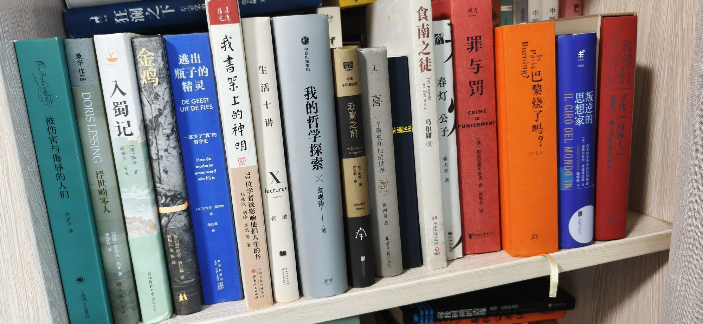

南房东第四层外

- 被伤害与侮辱的人们 娄自良译 上海译文出版社
- 浮世畸零人 莱辛作品 DORIS LESSING [英国]多丽丝·莱辛著 朱恩伶译 译林出版社
- 入蜀记 [宋]陆游著 钱锡生笺注 陕西师范大学出版总社
- 金鸡 墨西哥胡安·鲁尔福著 赵振江金灿译
- 瓶子的逃出精灵 一部关于“我”的哲学史 [荷兰]戈尔·格罗特 著 张佳琛 译
- 我書架上的神明 刘慈欣 刘瑜 吴思 等著 72位学者谈影响他们人生的书 山西出版传媒集团
- 生活十讲 蒋勋
- 我的哲学探索 金观涛 中信出版集团
- 赴宴之前 （英）毛姆著 罗长利译 Mougham Novels 续创 毛姆
- 一个秦吏和他的世界 鲁西奇著 北京日报出版社
- 读库生鲜
- 食南之徒 THE JOURNEY TO THE SOUTH 马伯庸 湖南文艺出社
- 春灯公子 张大春著
- 罪与罚 [俄]陀思爱耶夫斯基著 曾思艺译 CRIME & PUNISHMENT 果麦
- 巴黎烧了吗？Is Paris Burning?
- 叛逆的思想家
- The Stranager 寻找【局外人】
共 17 本书，上传于 2026-10-03 08:40:19。